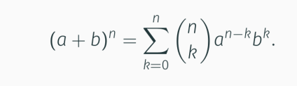
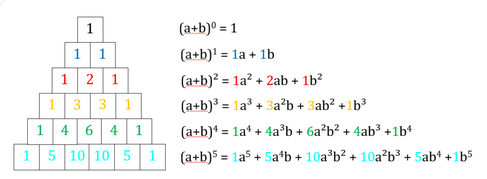

Mathe Klausur
Binomischer Lehrsatz
Der binomische Lehrsatz rechnet die Ergebnise der binomischen Formel mit beliebig hohem Exponenten aus. (insofern dieser größer gleich 0 ist)

Guter online Rechner
Das Ergebnis wird immer um einen Term größer je höher der Exponent ist.
Das Pascalsche Dreieck hilft dabei dies Abzulesen.

siehe auch Vorlesung 3